صورة لمرتفع«جراسينجتون» في يوركشير دايل
فيه حاجة كده مش عارفة إيه
فيه حاجة كده مش عارفة إيه، وبقول لو كده راح يحصل إيه؟
في 1996 أصدرت سيمون آخر ألبوماتها الغنائية، «في حاجة كده»، من إنتاج روتانا، لتكمل بذلك مسيرة فنية بدأتها منذ بداية الثمانينات، لـ«ترجمة» موسيقى البوب لتلك الفترة لجمهور مصري، ولتتفرد بين فنانات جيلها في فهم تلك الروح ومحاولة نقلها لجمهور مختلف. من الممكن أن تكون سيمون قد نجحت بدرجات متفاوتة في ترجمة أصداء تلك الموسيقى ودلالاتها (موسيقى لمجموعة من الشابات يريدن العيش بحرية وبدون وصاية من أحد) ولكنها دون شك تفردت بين بنات جيلها في تقديم تلك الذوقية، المتسائلة، المتشككة، الثائرة على شكل ونوع الفن المقدم في وقتها. يدور الفيديو المصور للأغنية حول تقمص سيمون لمختلف الكليشهات النسائية للصور البورتريه، وبالفعل يقوم المصور والمخرج محسن أحمد بتصوير سيمون في مختلف كليشهات صور البورتريه النسائي من أوائل القرن العشرين، فتتغير أزياء وشكل سيمون مع تغير شكل ونوع الكاميرا وتتوجه هي إلى الكاميرا متسائلة مرة بعد الأخرى «وبقول لو يعشق قلبي إزاي ما يبانش عليه».
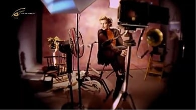
لقطة من أغنية سيمون في حاجة كده
كنت في الصف الأول الثانوي عندما أصدرت سيمون «فيه حاجة كده» وفي تلك الفترة كنت أصاب بنوبات نزيف من الأنف عند تغيير الفصول أو عند شعوري بالتوتر أو الخوف الشديد. تنفجر الأوعية الدموية السطحية لأنفي وينبجس السائل القاني ليعلن لمن حولي أن هناك شيئًا ما -على الرغم مني- يريد أن يخرج، بعد أن فشلت مقاومتي في إيقافه.
علقت بذهني أغنية سيمون ومثلما تماهت هي مع روح الشك والتساؤل: «وبقول لو كده راح يحصل إيه»، كنت أنا أفكر ماذا سيحدث إذا كان بالفعل ذلك الشيء، ذلك الشعور، تلك الرغبة، ذلك الميل، أو «الانحراف» موجودًا؟
أتذكر في أول يوم في الصف الأول الثانوي، كنت في حالة قلق شديد من التجربة، فهذه هي المرحلة الثانوية وأنا أدرك تمام الإدراك كل الأشياء «اللي كده» بداخلي وأدرك أيضًا ماذا من الممكن أن يحدث إذا خرجت تلك «الحاجة اللي كده». وفي لحظة ما، قبل نهاية اليوم انفجر الدم من أنفي ولم تكن هناك ممرضة في ذلك اليوم، فطفقت أتجول في أروقة المدرسة، باحثًا عن أي شيء استخدمه لإيقاف الدم السائل وإذا بشاب في الصف الأخير، أفزعه منظر الدماء، أخذ بيدي وأجلسني على كرسي وحاول إيقاف النزيف، ونسيت القلق المعتاد والمشاعر المختفية والتردد ومثلما فعلت سيمون، ومثلما فعلت أوعيتي الدموية بادلت ذلك الشاب أطراف الحديث بكل براءة وعبرت عن كاملي قلقي وخوفي، وإذا به يقول إن ذلك عادي لأن «كلنا بيحصلنا كده ساعات».
الاختفاء كمساومة دائمة بين الإفصاح والكتمان، تنفجر أوعيتنا لكي لا تنكشف أسرارنا ونخبىء حاجات وحاجات، وفي لحظات قليلة نختفي وراء خوفنا لتعلن أننا كده وهيحصل إيه؟
معللتي بالوصل والموت دونه
طابع بريد سوري لأبي فراس الحمداني
يقال في الأثر إن أبي فراس الحمداني أُسر مرتين وتأخر عمه سيف الدولة في افتدائه فلبث عند الروم أربع سنوات ورغم أن الروم أكرموه فخلوا له رداءه وسلاحه، ولكن من الواضح أن تجربة الأسر آلمت أبي فراس، فكتب الروميات، أهم ما كتب، يرثي فيها حاله وما آل إليه حظه. وعندما خصه الروم بذلك التكريم أنشد قصيدته الشهيرة، على قافية الراء، التي مطلعها، «أراك عصي الدمع».
لم يقم أبو فراس بجمع شعره في حياته وإنما جمعه كاتبه «ابن خالويه» الذي اعتمد جميع المؤرخين واللغويين على روايته، ورغم ذلك لم يتداول ديوان أبي فراس كوحدة متكاملة حتى القرن التاسع عشر عندما طبع في بيروت في 1873 في المطبعة السليمية.
ولا يمر عدة عقود حتى يقوم عبده الحامولي بتلحين وغناء بضع أبيات من القصيدة، لتغنيها أم كلثوم بعد ذلك في 1926، ثم يعيد زكريا أحمد تلحينها في 1944 ثم يلحنها السنباطي في 1964 وتزيد أم كلثوم عدة أبيات، وتسجلها بالشكل الذي نعرفه اليوم.
استمعت إلى أغنية «أراك عصي الدمع» بالصدفة، ربما كنت في السابعة أو الثامنة، لا أتذكر من قام بتشغيل شريط الكاسيت (أحفورة من حفريات ما قبل عصر الإنترنت)، ولكني أذكر أن كلمات الأغنية وأداءها حُفر بداخلي. لم تكن لغتي الفصحى على درجة كافية من التعقيد لكي أفهم معظم ما يقال، ولكني ذهلت من أداء أم كلثوم. ذهلت إلى الدرجة التي جعلتني أحفظ القصيدة عن ظهر قلب وأنا لا أفهم أغلب ما أقوم بترديده. لم يكن افتتاني بالأغنية منصب فقط على عبقرية أداء أم كلثوم، فهي تماهت مع الأغنية بشكل مفزع، حتى يخيل للمستمع أنها فارس من القرن الرابع الهجري عن حق، ولكن لأني أول مرة استمعت إليها ظننت أن أم كلثوم رجلًا. أخذت أفكر كيف لرجل أن يوصل هذا الكم من المشاعر بهذه الكثافة والحدة؟ وصدمت عندما أدركت أنها إمرأة وصدمت أكثر عندما ضحك الجميع من حيرتي وكيف أن الأمر تشابه عليّ، فكيف يمكن أن يخطئ المرء في أم كلثوم؟
أتذكر أن أختي حاولت شرح معنى القصيدة لي، وتساءلت مرة أخرى لماذا تغني أم كلثوم وكأنها رجل؟ كانت أم كلثوم قد تجاوزت الستين عندما غنت قصيدة أبي فراس في 1965 (فبدا صوتها الغليظ أشد غلاظة من ذي قبل)، وبعد مرور عقد على زواجها من الدكتور حسن الحفناوي (الذي تزوجته في 1954) وبعد أن بدأت الاستعانة بملحنين آخرين غير السنباطي الذي احتكر التلحين لأم كلثوم طوال عقد الخمسينيات تقريبًا. لتعود مرة أخرى إلى السنباطي، ويعيد السنباطي تلحين القصيدة، ليعطيها قليلًا من الثبات (في توزيعها وبنائها)، وليتسلل صوت أم كلثوم بين كلمات أبي فراس وألحان السنباطي لتحيي روح هذا وتصدح بروح ذاك.
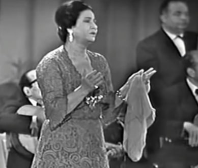
لقطة من حفل أم كلثوم أراك عصي الدمع
أحب أن أعتقد أن صوت وشكل أم كلثوم أسَرها، وأن شعر أبي فراس ولحن السنباطي فكا أسرها، فناشدت حبيبتها، تفخر بفروسيتها، بخيالها، بسخائها، بصوتها الذي أبى إلا أن ينقل كل حالات الراء وبحر الطويل وتأوهات مقام الكرد. بفخر المحارب وعاطفة الشاعر أدركت أم كلثوم مكنون أبي فراس، فبارزته وأخذت مكانه واختبأت في حوايا شعره ومناشدته حبيبته فلم يلحظ أحد تسلل أم كلثوم، ورآها الناس جميعهم تمتطي جوادًا وتمسك سيفًا في ذات الوقت، وذهل الناس كما ذهل الروم، وأكرموها كما أكرم الروم أبي فراس، فصفقوا وبكوا وقلدوا أم كلثوم بالأوسمة والنياشين.
الاختفاء على مرأى ومسمع من الجميع، الاختفاء كمحاولة لإسراء الذات عبر الزمان والمكان، الاختفاء كتحايل على ترددات أصواتنا وعقولنا، فنختفي لنظهر كفرسان، كشعراء، كذوات ترى بعضها على حقيقتها. نتسلل إلى مساحات التجريد والرمزية لنلعب صورًا لم تكن متاحة لنا، لنتغنى بأحباء لم نستطع المجاهرة بحبهم، لنفخر وتأخذنا الصبابة والفكر، فنتماهى مع أشباح من كانوا وعواطف من حولنا ولوهلة نكون حقا من أردنا أن نكون.
ناسياها معاك ياعيوني، وفاكرني هاخاف يلوموني
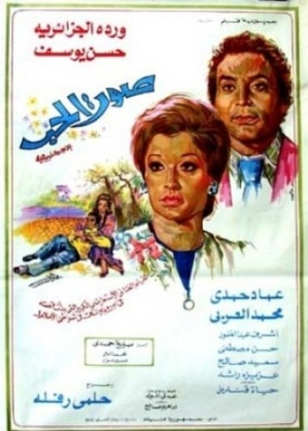
بوستر فيلم «صوت الحب» 1973
لم أفهم معنى المصطلح عندما سمعته أول مرة، «الحديقة». تخيلت أنه ملهى ليلي أو كافيه يتواعد فيه الأحباء والأصدقاء. كان ذلك في بدايات الألفينيات، في فجر عصر الإنترنت، وكانت المعلومات شحيحة وكانت المعرفة تتناقل من معلم/ة إلى تلميذ/ة أو حبيب لحبيب. لم تسعني الفرحة عندما علمت يومها أننا ذاهبون إلى «الحديقة»، وأحسست أني قد ترقيت درجة من العلم والمعرفة طال انتظارها، وأني اليوم سوف أرى شيئًا لم أره من قبل. لم تكن الحديقة سوى جزيرة صغيرة من الشجيرات والنجيلة في منتصف الطريق، تطوف حولها السيارات (غالبًا بعد منتصف الليل) بعض الوقت وتتوقف بعض الوقت فيترجل راكبوها، ويتبادل من يعرف بعضهم بعضًا السلام، ويتعرف (ويتفحص كذلك) من لا يعرف بعضهم بعضًا.
تتوقف مسيرة وردة الفنية في بداية عقد الستينيات (تدور الكثير من الأساطير حول سبب ذلك التوقف) وتسافر إلى الجزائر لتعود مرة أخرى في أوئل السبعينيات، لتظهر في فيلمين متتالين وتتزوج ببليغ حمدي، ولا تتردد ولو للحظة، بذلك الصوت الملآن، أن تغني أنها لا تخاف أن يلوموها طالما كان معها حبيبها، وتعود إلى القاهرة بعد غياب عشرة أعوام تقريبًا، تمثل وتغني وتعود لتكتسح الساحة مرة أخرى وصوتها يتردد في أرجاء صالات السينما وقاعات الاحتفالات وسماعات الراديو والتليفزيون. تعود وردة لتجهر بحبها للحياة وللغناء وللأداء ولتصعد على المسرح في كامل زيها وتغني «وفاكرني هاخاف يلوموني، مايلوموا طب وأنا مالي».
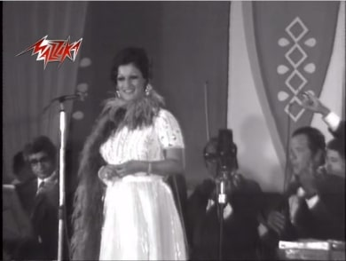
لقطة من حفل لوردة تغني فيه طب وأنا مالي
نتلاقى عند منتصف الليل، نترجل، نمشي متباطئين، نصل إلى الحديقة، نتقابل، تأخذنا بهجة التلاقي، نضحك قليلًا، نغني قليلًا، نتمايل في جذل، وللحظات معدودة ينسحب ذلك الشعور الملازم لنا، من خوف وحزن واحتقار للذات، ونتماهى مع أدائية وردة، فنرى الطبيعة، بشجيراتها ونسائمها، وليلها يضحك لنا ويتمايل معنا، وننسى ونتناسى المعاناة اليومية وفي نشوة الانفتاح على عالم، غالبا ما يلفظنا، لا نخشى اللوم والتقريع.
الاختفاء كمناورة على الخوف والتردد، الاختفاء كتقمص لأداء وردة، فنغني ونرد على اللوم والشجب، ونرمي همومنا وراءنا، ونضحك ونحب الحياة، وللحظات قليلة لا نكترث بالأحزان ولا بالخطر الملازم لنا داخل وخارج الحديقة.
لا تخف، فإن الجزيرة مليئة بالضوضاء
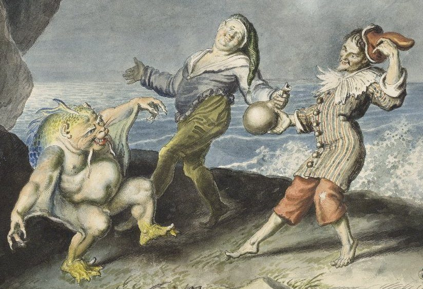
رسم يبين كالابان، ستافانو، وترينكيلو، رسمها يوهان هينريش رامبرج، المصدر ويكيبيديا
أنطَق شكسبير شخصية كالابان في مسرحية «العاصفة» أجمل ما كتب في تذوق الموسيقى. وعلى قبح ووضاعة كالابان إلا أن ذلك الوحش مالت نفسه وطربت عندما استمع إلى موسيقى الأرواح التي تسكن الجزيرة، وأقر بتأثيرها الذي يمنح متعة ولا يؤذي، وعلى الرغم من غرابتها، فإن الأوهام والأحلام التي تثيرها لا يشبع منها كالابان. فيبدو أن شخصيات «العاصفة»، أسرها شكسبير بسحر موسيقى ما كتب، في ذلك المكان المعزول، على الجزيرة شبه المهجورة.
كانت «العاصفة» ضمن آخر أعمال شيكسبير وفيها يظهر إدراك شكسبير بشيخوخته وأسئلة تلك المرحلة، فنراه يتحدث عن الإرث، علاقته بابنته، عما يخلفه الإنسان من عمل صالح وفي ذات الوقت نراه يبدي شغفه المعتاد بما يجري حوله فيتكلم عن رحلات المكتشفين والرحالة، عصر الاستكشاف والاستعمار، وعن طبيعة سكان تلك الأماكن المجهولة (بشكل شديد العنصرية في معظمه) وعن العلاقة بين السحر والعلم (في إشارة لولع ملك انجلترا في ذلك الوقت، الملك جيمس السادس والأول، بالسحر والشعوذة) ويتكلم أيضا عن المسرح والكتابة، فيعادل بين الاثنين، وكأن شكسبير سحر مشاهديه لأكثر من عقدين من الزمن وحان الوقت لفك السحر، فيقول على لسان بطله «بورسبرو»: «هذا سحري، الآن، سأبطله».
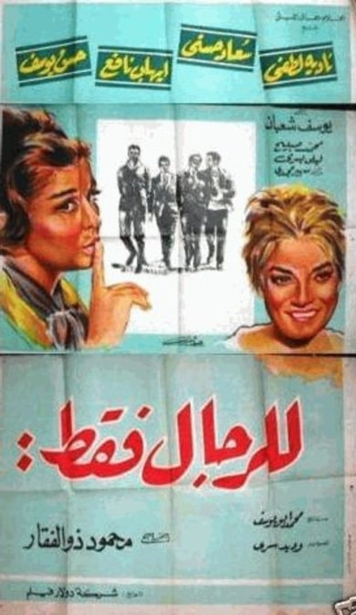
بوستر فيلم «للرجال فقط» (1964)
لم أصدق ما شاهدته، في ذلك المشهد يحتضن كلٌ من إيهاب نافع وحسن يوسف نادية لطفي وسعاد حسني وهما متنكرتان في زي رجلين تم إرسالهما إلى موقع تنقيب عن البترول. ويبدآن في تقبيل بعضهما البعض في ذلك الموقع النائي في الصحراء. وللحظة قبل أن يتم اكتشافهما من قبل زملائهما يبدو المشهد كأنه من عالم موازٍ، فلا يمكن أن يحدث هذا إلا في مثل هذا الموقع المعزول، الغريب. ووقعت أنا تحت تأثير ذلك «الوهم» الذي أحدثه سحر التنكر.
في ذلك المكان البعيد، في رأس غارب، على ساحل البحر الأحمر، حركت أهوائه نفوس أبطال الفيلم، بشكل ساخر-رومانسي، يتلاءم مع طبيعته، فنرى في العديد من المشاهد الصحراء الشاسعة والبحر يحدها من أحد الجوانب، كعالم موازٍ مثل الجزيرة شبه المهجورة في «العاصفة». ويثير عزلة المكان وخلوه من البشر، خاصة النساء، جوًا غريبًا من الوحدة وإثارة الأوهام كذلك (بشكل صبياني مزعج في حالة حسن يوسف وبشكل وجودي، لا يخلو من ثقل الدم، في حالة إيهاب نافع).
طوال حياة شكسبير لم يُسمح للنساء بالظهور على المسرح والتمثيل، بل وحتى بعد وفاته بخمسة عقود أو يزيد، حيث سمح لهن بالظهور على المسرح في إنجلترا في 1660. ويدعونا ذلك لتأمل فكرة أن كل شخصيات شكسبير النسائية قام بأدائها رجال. بما في ذلك مسرحية «العاصفة»، فغالبًا قام شاب صغير بدور ميرندا، ابنة بروسبرو، والتي وقعت في غرام فرديناند، ابن الملك الذي رمته العاصفة على الجزيرة ولكن على عكس مشهد فيلم «للرجال فقط»، لم يخلع الممثل تنكره، ليذهب الشك والحيرة عن المشاهدين، كما فعلتا نادية لطفي وسعاد حسني في الفيلم لتنقذا نفسيهما من مصير أسود.
أراد محمود ذوالفقار، كاتب ومخرج الفيلم، تلاعب بسيط، كوميدي لامرأتين تنكرتا في زي رجلين لكي تتاح لهما الفرصة للذهاب للتنقيب عن البترول في أحد المواقع الفعلية (وبالفعل يتم تصوير الفيلم في واحدة من أقدم مناطق استخراج البترول في مصر، رأس غارب) بدلًا من مجرد العمل بمعمل في القاهرة، لإثبات جدارتهما كمهندستين، لأن النساء لا يسمح لهن بالعمل في المواقع. ربما لم يفكر محمود ذوالفقار أن مثل تلك القصة كان من الممكن أن تحدث دون خدعة التنكر أو دون أن تنزع نادية لطفي وسعاد حسني تنكرهما لتنقذا الموقف. فسحر التنكر الذي صنعتاه نادية لطفي وسعاد حسني كان لا يمكن أن يستمر، وموسيقى المكان وأجوائها العجيبة لم تمنح المتعة لأكثر من عدة ثواني.
الاختفاء كتحايل على الطبيعة، كخدعة نسحر بها أعين من نحب ومن نخاف، الاختفاء كلحظة طويلة نلبس ذواتنا لكي لا يرانا العالم، لنخلع عنا ما فعلوه من ظلم وإبعاد ونفي. الاختفاء كهروب إلى جزيرة، إلى صحراء نمثل أدوارنا لكي يطلق الجمهور سراحنا في آخر العرض. الاختفاء كحيلة لإيقاف الزمن، لإعادته إلى صورته الأولى، مثل النوم، ننام لنستيقظ أو ليأخذنا نومنا إلى خيال ما نريده.
ولا شاف النيل في أحضان الشجر
أمضى عاطف الطيب حوالي خمسة أعوام في فترة تجنيده (1970-1975) وشارك في حرب أكتوبر 1973 وكانت تلك التجربة لها بالغ الأثر على ذاكرته وعلاقاته الإنسانية، خاصة تلك الصداقات التي تشكلت من خلال تلك التجربة، والتي ظهرت بشكل واضح وجلي في ثاني أفلامه الروائية الطويلة «سواق الأتوبيس» 1982. في مشهد شديد الرقة، نجد البطل (نور الشريف) يتواعد مع أصدقائه القدامى وينطلقون في شوارع القاهرة، محاولين بروح ساخرة، حالمة بعض الشيء إعادة شعور تملك المدنية، وينتهي بهم المطاف عند طريق الأهرامات ليسطع بدر التمام، مغرقا المشهد بضوء يتموج بين أزرق لامع وظلال فضية، وليخرج الأصدقاء ويبدأون في سرد ذكرياتهم عن التجنيد والحرب، بصوت المحب وصوت الصديق وفي لحظة شديد الندرة تتلاشى الحدود بين النبرتين.
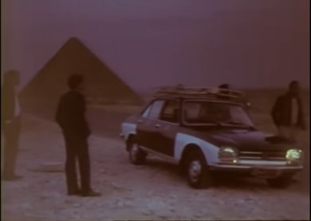
لقطة من فيلم سواق الأتوبيس
كنت في حيرة من أمري. هل أذهب إلى ميدان التحرير مع الأصدقاء الأكاديميين/المثقفين، أم مع زملاء العمل أم أصدقائي من مجتمع الميم. وكأنها حالة من تلك الحالات حين تتداخل الولاءات ولا ندري إلى أي مجموعة ننتمي ومن «يمثلنا». وبعد تبادل عدة رسائل مع الأصدقاء والمعارف من مجتمع الميم قررنا جميعا النزول كمجموعة واعية بذاتها واختلافها إلى ميدان التحرير يوم 26 يناير 2011. كانت أول مرة أشارك في فعل سياسي من خلال ذلك الموقع، موقع الأقلية المُجرّمَة. وبكامل وعيي وبكامل إدراكي بعواقب مثل التحيز لتلك المجموعة. كنا جميعا في حالة من الخوف والارتياب الشديد، فلم يكن هناك فقط تاريخ من التنكيل والملاحقة الأمنية لنا كفصيل (كانت حادثة «الكوين بوت» في 2001 علامة فارقة في وعينا) ولكن كان هناك حالة من السيولة الشديدة وعدم اليقين تتخلل ذات الهواء الذي نتنفسه.
غنت شادية أغنيتها «يا حبيتي يا مصر»، عام 1970، بعد غياب عدة سنوات من ساحات المسرح، وتقول الأسطورة إن الشاعر محمد حمزة كتب الأغنية في جلسة واحدة، ولحنها بليغ حمدي في نفس الجلسة، وتم تسجيلها وإذاعتها في خلال عدة أيام. ولا أظن أني استمعت إلى تلك الأغنية إلا في ميدان التحرير خلال أيام الاعتصام. كانت تتردد أصداؤها في جنبات الميدان كل حين، وعلى بساطة اللازمة «يا حبيبتي يا مصر»، إلا أن وصف النيل، والغناء على ضوء القمر، أعاد إلى ذهني مشهد فيلم «سواق الأتوبيس»: البطل وأصدقاؤه يتجاذبون الحديث على ضوء القمر، يتحدثون عن تلك الصداقات/العلاقات التي أنقذت حياتهم، والتي أعادت لهم ذلك الشعور أن في هذه الحياة ما يستحق الدفاع عنه وأن فكرة «الوطن» لم تكن مجرد أكذوبة نسجتها مخيلة بعض الظباط (من عرابي حتى عبد الناصر) بل معركة تستدعي الدفاع عنها بحياتهم إن لزم الأمر.
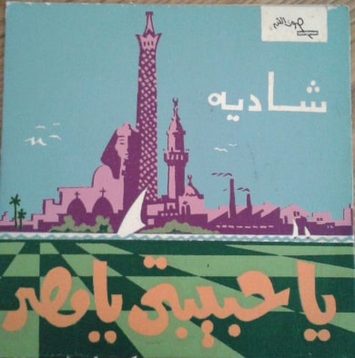
غلاف أسطوانة يا حبيتي يا مصر
لم تحركني الشاعرية فقط، كانت تلك اللحظة من الممكن أن تكون هي المرة الأولى التي رأيت فيها ذاتي تتداخل مع ذوات الآخرين، لم يعد هناك مجموعة منبوذة تحتقرها الأغلبية، أو تنكل بها سلطة كمدعاة للضوضاء والإلهاء، ولكن مواطنون مهمومون بالشأن العام، جزء لا يتجزأ من ذلك المجتمع.
وللحظة عابرة اختبأنا في مخيلة جموع المصريين، فرأينا النيل في أحضان الشجر، وتحدثنا في ليل القاهرة (كان القمر قد اكتمل في 21 يناير حينها) وتكلمنا عن الحب والصداقة ولبرهة تلاشت الحدود بين ما نحب وما نريد وما يحبوه ويريده الآخرون.
الاختفاء كحديث يتسامر به الأحباء والأخلاء، نتسلل إلى مخيلتهم فنعبث بالحدود، فتصبح الصداقة حبًا والحب صداقة وفي تلاقي البشر في فضاء الرغبة تتلاشى الحدود.
ما قاسته روحي، هي وحدها، يمكنها الإفصاح عنه
في 1839 لم تكن هناك الكثير من البيوت في هورث، فكانت بينها وبين المروج والتلال مسافة غير بعيدة، وكانت إيملي برونتي قد عادت إلى هورث بعد قضاء ستة أشهر مضنية كمدرسة بالقرب من «هيليفاكس». كانت هورث قرية صغيرة تحيط بها المروج إلى الشمال، وكانت بعيدة عن ضوضاء وزحمة المدن، فكانت بمثابة حاضنة أفكار وخيالات إميلي وأختها وأقرب الأشخاص إليها؛ آن. لعلهن في يوم من الأيام تنزهن باتجاه المروج وأطلقنا لخيلاتهن العنان، يمزجن بين طبيعة يورك والشخصيات الخيالية التي صاغها السير والتر سكوت كما كن قرأنها في رواياته في الصغر.
قرأت «مرتفعات ويذرينج» في مراهقتي، لم أدرك في حينها معنى الأدب النسائي أو أن إميلي اضطرت أن تكتب تحت اسم مستعار، اسم رجل، حتى تتمكن من نشر كتاباتها، فهي على الأغلب الظن لم تكن تكتب من موقع سياسي واعٍ بأهمية حقوق المرأة أو حتى انشغلت بالدفاع عن حق المرأة في الكتابة، ولكن ما أفتقدته من تعبير سياسي تغلبت عليه بالخيال، فتخطى خيالها حدود إدراكها السياسي وسكنت شخصياتها «الخيال القوطي»، بعلاقته المضطربة بالطبيعة، تلك القوة المفزعة غير المستأنسة، فهي قوة نبيلة ومتوحشة في آن واحد. فاتخذت من الطبيعة بتباينها وعظمتها ساحة لخيالها، وهناك لم تقف على حدود ما يمكن كتابته، لكنها كتبت شخصيات لا تحدها حدود الذوقية الاجتماعية وما يليق أو لا يليق، فتم اتهامها بأن خيالها متوحش وذكوري. ولعل ما أثار حفيظة النقاد حينها هو ذلك الشيء الذي لا يسكن في أي من تلك الثنائيات أنثوي/ذكوري، رومانسي/واقعي. فهو على العكس من ذلك، خيال يتناغم مع الطبيعة في توحشها واللامحدوديتها، ويتحدد بحدود تلك المروج وسمائها وجوها المضطرب. لم يستوعب سياق إميلي جموح خيالها، فلجأت إلى تلال يوركشاير ورياحها التي لا تتوقف، وبقسوة تلك الطبيعة وذلك المناخ طافت روحها إلى حيث لم يتمكن جسدها.
عندما كنت صغيرًا كان خيالي كثيرًا ما يجمح إلى ما لا أستطيع فهمه أو ما لا أود فهمه، فأجري إلى الشجر أختبئ بين جذوعها وأتمتم للحائها كل ما دار في نفسي ولم أستطع البوح به. وقرأتُ إميلي، وأدركت أن في نسائم الريح وتعاريج الشجر مساحات ومساحات نجول ونطوف ونتمتم أسرارًا لا يعرفها سوى الرياح والشجر.
الاختفاء كمحاولة لسكون بين جذوع الشجر ونسائم الرياح، لأننا لا نسكن مخيلة محددة أو لأن خيالنا في جموح الطبيعة وغرابتها فنذهب حيث تأخذنا الرياح ونسكن حيث سكنت فلا نرتبط بحدود ولا نقع تحت ثنائيات مسبقة.
فهو مثلي، مثلي عاشق كيف يبوح بالذي يضنيه
في 2001، أصدرت بيورك ألبومها الثالث «فيسبرتين»، أو صلوات الليل، بعد بداية دخولها في علاقة عاطفية مع الفنان الإنجليزي ماثيو بارني. ستستمر علاقتها ببارني حتى 2015 لتصدر ألبوم عن انتهاء تلك العلاقة، «فالنيكورا». يعد «فسبرتين»، هو محاولة لتتبع بداية تلك العلاقة الحميمية وما تحويه من إثارة ولكن أيضًا اختفاء. تصبح الأغاني هي محاولة لاصطياد تلك الهمهمة التي تصدر دونًا عنا عندما نقبل أحدهم أو الوشوشة التي تصدر منا عندما نتحسس جسد من نحب. حاولت بيورك رصد تلك الحالة التي غالبًا ما تحدث في الخفاء، بالليل، في مكان غير مرئي أو غير مسموع.
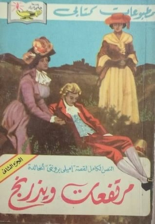
صورة غلاف مرتفعات ويذرينج
كنا تحدثنا بضع مرات من قبل، ولكن وجدته شخصًا له آراء غريبة، عنيد، صعب المراس، يملك ذلك المزيج المزعج بين الثقة وادعاء العقلانية. بعد عدة من تلك المحادثات الغريبة، طلب مني أن نتقابل فتواعدنا وذهبنا نحتسي القهوة لأجده شخصًا حسيًا، ماديًا لا يتسم بكثير من العقلانية ولكن لديه صلة واضحة ومباشرة برغباته وغرائزه، يعرف جيدًا ما يحب وما يكره. ذلك الوضوح هو ما يعطيه تلك الثقة. جلسنا نتحدث عن كل شيء ولا شيء، لم يكن قارئًا جيدًا أو متبحرًا، ولكن ما كان ينقصه من معرفة استعاض عنه بحضور ذهني وحصافة مبهرة. انتهينا من القهوة ولكن لم ينته حديثنا.
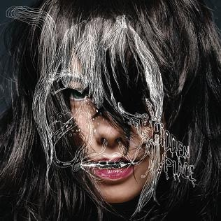
صورة لإصدار أغنية «المكان الخفي»، جميع الحقوق محفوظة لشركة One Little Indian وللفنان المصمم
غنت فيروز «سكن الليل» في 1967 بعد زيارة عبدالوهاب لبيروت في نفس ذلك العام (هروب من واقع الهزيمة؟ ربما) وقام الأخوان رحباني بتوزيعها لتنضم لقائمة أغاني فيروز، وقائمة قصائد عبدالوهاب والتي من الممكن اعتبارها أعظم ما لحن من قصائد. لا أعتقد أن هناك قصيدة تلاعبت بثنائية الإخفاء/الإفصاح، الرؤيا/الحجب، السكون/الكلام، مثل تلك القصيدة. فيصبح الكون كله في حالة من السكون والتخفي، يغشاه الليل، ويتقابل العشاق سرًا «في ظلام الليل»، لتتبعهم الجن والكائنات الأخرى في حالة مماثلة من العشق والهيام.
ذهبنا إلى بيته وجلسنا نتحدث ونتحدث، وما أزعجني من آرائه تناسيته تمامًا عندما بدأ الحديث عن ما يثير شغفه من موسيقى وسينما وبدا أنه يعبد إلها واحدًا، اسمه الجمال. لم تكن تلك المرة الأولى التي أتقابل فيها مع شخص لديه ذوقية مميزة أو حتى جميلة، ولكنها تلك السلاسة والسهولة من التنقل من فكرة إلى فكرة، من صورة إلى صورة، ومن أغنية لأخرى. وفي لحظة ما، في ركن مظلم في غرفته، سكن الليل، وأفصح كلا منا عن أسراره وانساب صوت بيورك يغني في خفوت عن «المكان الخفي»، وعن مدى رقة شعور أن تأخذ أحدهم إلى المكان الخفي، ما بين ثنايا شعرك وجلدك.
الاختفاء كمحاولة لخلق مساحة غير مرئية، تتبدل خواصها، تنشئها العاطفة مرة وتشكلها الرغبة تارة أخرى، الاختفاء كمكان نتوارى فيه عند سكون الليل أو عندما تفيض قلوبنا ولا تستطيع أجسادنا احتواء ما نشعر، فنتسلل بين همهمات وأصوات خافتة في أمكنة خفية مليئة بالأسرار. الاختفاء كمحاولة للإفصاح عن سر، أدركته القلوب والحواس قبل أن يدركه العقل أو الكلمات.
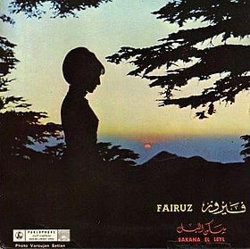
غلاف أسطوانة سكن الليل